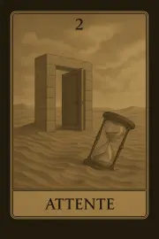
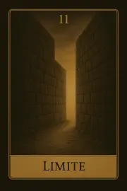
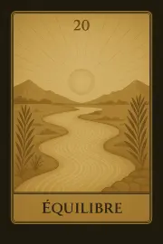
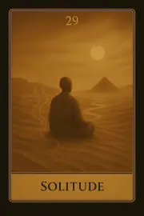
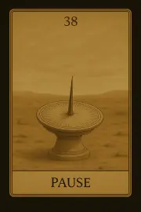
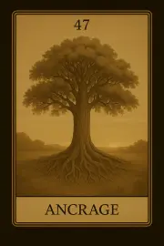
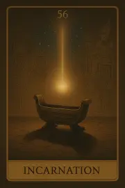
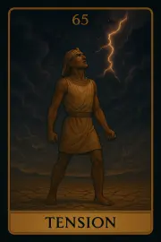
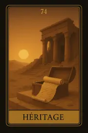

Famille 2 – Geb (Terre)
Cette famille explore l’ancrage, la matérialité, les fondations concrètes de l’existence. Elle est liée à la Terre et à Geb, divinité de la stabilité, de la structure incarnée et des ressources physiques. Elle met en lumière nos rapports au corps, à la sécurité et aux réalités tangibles.
Carte 2 – Attente
>Mots-clés : Immobilité, Blocage, Pause, Réflexion, Bureaucratie
Numérologie : 2 – Dualité, Équilibre, Choix, Réflexion
Planète principale : Terre
Divinité principale : Geb
Planète secondaire : Soleil
Divinité secondaire : Râ
Interprétation de la carte 2 : Attente (droite)
1. Caractère de la personne
Attente représente une personne qui fait face à une période de réflexion ou une pause imposée dans sa vie. Sous l’influence de Geb et de la Terre, cette carte montre une personne ancrée, réaliste, mais qui peut être confrontée à une immobilité temporaire. Cela n’est pas forcément une mauvaise chose, car il est nécessaire de faire une pause avant d'aller de l'avant. L'influence du Soleil et de Râ adoucit cette période, apportant une lueur d'espoir et une énergie positive. La personne a tout de même une vision claire de la situation et peut prendre le temps de réfléchir pour mieux agir une fois la période d’attente terminée.
2. Plan affectif
Sur le plan affectif, Attente peut indiquer une relation en suspens, un moment où les choses ne progressent pas immédiatement. Il peut y avoir une sensation de blocage émotionnel, un besoin de réflexion avant de faire des choix importants dans la relation. Cependant, l’influence du Soleil et de Râ apporte un optimisme latent, permettant à la personne de croire que la situation va évoluer positivement avec le temps. L'attente pourrait aussi signifier qu’une période de lenteur est nécessaire pour clarifier les sentiments et les attentes de chaque partenaire.
3. Plan matériel
Dans le domaine matériel, Attente représente des retards ou des obstacles temporaires dans un projet ou des démarches administratives. Cela peut concerner des situations où il est nécessaire d’attendre des réponses externes, comme des démarches bureaucratiques, des retards financiers ou des difficultés à avancer sur un projet matériel. L’influence du Soleil et de Râ donne cependant une lueur d’espoir, apportant des perspectives de réussite, même si les choses semblent stagnantes. Cela suggère que la patience sera récompensée.
4. Plan professionnel
Sur le plan professionnel, Attente symbolise un moment où les projets sont en suspens, soit par des obstacles externes, soit à cause d’un manque de ressources ou de décisions à prendre. Ce n’est pas une période d’inaction, mais de réflexion stratégique avant de prendre des décisions importantes. L’influence de Geb évoque des difficultés matérielles à surmonter, mais l’influence du Soleil et de Râ adoucit ces obstacles, suggérant que la personne a tout ce qu'il faut pour réussir quand le bon moment viendra. L’attente devient alors un moment de réajustement avant le succès.
5. Plan spirituel
Spirituellement, Attente incarne un temps de pause nécessaire pour évaluer et réévaluer son chemin spirituel. Cette carte suggère une période de réflexion sur son évolution intérieure, où il est important de prendre du recul pour mieux comprendre les leçons spirituelles. Sous l'influence du Soleil et de Râ, cette pause devient un moment de lumière intérieure, où la personne peut trouver des réponses à ses questionnements spirituels et se réaligner avant de poursuivre sa quête. L’attente ici n’est pas stagnation, mais préparation intérieure pour une évolution future.
Carte 2 : Attente (inversée)
Lorsqu'elle est inversée, la carte Attente peut signaler que les retards ou obstacles deviennent plus marqués et que la situation de blocage pourrait être plus longue que prévu. Cependant, l’influence du Soleil et de Râ reste présente, mais elle est atténuée, ce qui signifie que la personne pourrait avoir du mal à trouver l’énergie pour avancer ou que les obstacles sont difficiles à surmonter.
1. Caractère de la personne
En position inversée, cette carte peut indiquer que la personne reste bloquée, incapable de progresser en raison de la peur ou du manque d'action. La personne peut être dans une période de confusion, avec des doutes profonds concernant sa direction. Les influences de Geb peuvent montrer une stagnation dans ses actions ou dans son esprit, et l’influence du Soleil et de Râ, normalement positives, est diluée, rendant cette période plus difficile à gérer.
2. Plan affectif
Dans le domaine affectif, l’inversion d’Attente suggère un blocage émotionnel profond, où les relations sont marquées par une immobilité ou un manque de progrès. Cela peut indiquer une relation figée, où les deux personnes ne parviennent pas à avancer, ou une incapacité à se reconnecter après un conflit. L’influence de Geb peut signifier un attachement excessif au passé, tandis que l’énergie du Soleil et de Râ est absente, empêchant toute véritable évolution dans la relation.
3. Plan matériel
Sur le plan matériel, l’inversion d’Attente marque des obstacles prolongés et des retards persistants. Les choses semblent stagnantes et il peut y avoir un sentiment de frustration face à la lenteur du processus. Les projets sont bloqués par des problèmes externes, des manques de ressources ou de progrès, et l'influence du Soleil et de Râ ne semble plus apporter cette énergie rayonnante. Il est important d’attendre encore avant d’agir, mais cela devient difficile.
4. Plan professionnel
L’inversion de cette carte suggère un déséquilibre professionnel. Des obstacles de plus grande envergure ou des manquements systémiques peuvent nuire à la progression des projets. Il peut y avoir un manque d’opportunités ou des décisions bloquées par des circonstances extérieures. L’influence du Soleil et de Râ indique que la personne pourrait ne pas être prête à prendre le risque nécessaire pour démarrer de nouvelles entreprises ou répondre aux défis professionnels.
5. Plan spirituel
Spirituellement, l’inversion d’Attente indique un désalignement avec le chemin spirituel, où la personne semble se sentir déconnectée ou perdue dans sa quête. Il peut y avoir des obstacles spirituels ou un manque de clarté intérieure. Les progrès sont lents, et la personne peut avoir l’impression que sa pratique spirituelle est bloquée ou stagnante.
Résumé de la carte 2 : Attente
Attente est une carte qui représente une pause nécessaire, mais en position inversée, elle marque une période de blocage prolongée. L'influence de Geb et de la Terre nous montre que ces obstacles sont principalement liés à des facteurs externes, mais l'énergie du Soleil et de Râ peut nous apporter des réponses ou solutions à condition de rester patients et réceptifs. En position inversée, cette carte suggère un retard dans la résolution des problèmes, mais il n’y a pas de réelle perte de direction, juste un besoin d’ajustement.
Carte 11 – Limite
Mots-clés : : Contrainte, Obstacle, Barrière, Restriction, Frustration
Numérologie : 11 – Chiffre maître, Dilemme, Transformation, Sagesse, Doutes
Planète principale : Terre
Divinité principale : Geb
Planète secondaire : Terre
Divinité secondaire : Geb
Interprétation de la carte 11 : Limite (droite)
1. Caractère de la personne
La carte Limite symbolise une personne confrontée à des obstacles externes ou internes qui la ralentissent ou la bloque dans sa progression. Cette personne peut faire face à des situations où les barrières semblent infranchissables, qu’elles soient matérielles, psychologiques ou émotionnelles. L'influence de Terre / Geb renforce cette réalité concrète et les limites tangibles, et l’individu peut avoir l'impression que les choses avancent très lentement, ou qu’il y a des obstacles constants à surmonter. Cependant, cette carte n'est pas seulement un signe de restriction, mais aussi un appel à l’introspection et à la réflexion. Le chiffre maître 11 suggère une possibilité de transformation intérieure et de sagesse qui peut émerger lorsque la personne accepte ces limites et en tire les enseignements. Les doutes peuvent ralentir la progression, mais ils offrent aussi la possibilité de se renforcer et de devenir plus sage.
2. Plan affectif
Sur le plan affectif, Limite peut symboliser une relation où les émotions ou les attentes sont limitées par des doutes ou des conflits internes. Il peut s’agir d’une relation dans laquelle les barrières émotionnelles empêchent l’une des parties de s’engager pleinement. Cela peut aussi représenter un blocage dans l’évolution d’une relation, ou la frustration causée par des obstacles externes qui empêchent les deux partenaires de se connecter de manière plus profonde. Terre / Geb indique qu'une certaine stabilité peut être atteinte dans cette relation, mais uniquement si les personnes concernées sont prêtes à faire face à leurs peurs ou à leurs doutes. Il est essentiel de briser les barrières pour permettre à la relation de se développer.
3. Plan matériel
Sur le plan matériel, Limite symbolise une situation où des contraintes externes comme des règles, des normes sociales ou des difficultés financières freinent la progression. Cela peut aussi représenter un moment où la personne se sent bloquée par des obstacles matériels qu’elle ne parvient pas à surmonter, tels que des contraintes professionnelles ou des limitations physiques. Cependant, l'influence de Terre / Geb rappelle que, même dans des situations difficiles, il est possible de trouver un ancrage et des solutions pratiques. Cela exige une approche réaliste et une persistance pour affronter et surmonter les obstacles, avec la sagesse du chiffre maître 11, qui incite à se réinventer à travers l'épreuve.
4. Plan professionnel
Dans le domaine professionnel, Limite peut symboliser un blocage ou une contrainte dans la carrière, comme une absence de reconnaissance, une limitation des opportunités, ou un manque de progression dans un poste ou un projet. Il peut aussi représenter un dilemme difficile à résoudre, où la personne ne sait pas quel chemin choisir pour aller de l’avant. Sous l’influence de Terre / Geb, il y a la possibilité de trouver une solution pragmatique, mais cela nécessitera de faire face aux limites, de remettre en question les obstacles, et de trouver un moyen concret de surmonter ces barrières. La sagesse apportée par le 11 peut mener à une transformation professionnelle, mais cela implique souvent un changement dans l’approche, une réflexion sur les valeurs et les objectifs.
5. Plan spirituel
Spirituellement, Limite peut indiquer une phase de blocage ou de stagnation dans la quête spirituelle. La personne pourrait ressentir qu’elle est bloquée dans son cheminement spirituel par des doutes ou des peurs qui l’empêchent de progresser. Cependant, l’influence de Terre / Geb suggère qu’il est possible de trouver un ancrage spirituel dans la réalité quotidienne et de transformer ce blocage en une leçon d'humilité et de patience. Le chiffre maître 11 appelle à rechercher la sagesse à travers ces défis, et à comprendre que les limites spirituelles actuelles peuvent être une invitation à se renforcer et à se réinventer sur le plan intérieur.
Carte 11 : Limite (inversée)
Lorsqu'elle est inversée, Limite symbolise un dérèglement des contraintes et un retour à la liberté après une période de blocage. Il peut y avoir une libération de certaines barrières, ou une situation où les obstacles deviennent moins importants. Cependant, l’inversion peut aussi signaler une résistance au changement, ou une tendance à éviter de faire face à des difficultés. La personne pourrait refuser de regarder en face les véritables obstacles, ou elle pourrait passer à côté de nouvelles opportunités qui nécessitent une certaine réflexion et un changement intérieur.
1. Caractère de la personne
En position inversée, cette carte peut signaler une personne qui évite de confronter les obstacles ou qui rester dans le déni face à des difficultés importantes. Cela peut aussi être une personne qui n’arrive pas à sortir de sa zone de confort malgré les opportunités de transformation qui s’offrent à elle. Cela pourrait aussi symboliser quelqu'un qui refuse de se confronter à ses peurs ou d’autres limitations intérieures.
2. Plan affectif
Sur le plan affectif, Limite inversée peut indiquer que les conflits émotionnels ou les obstacles relationnels commencent à se dissiper, mais que la personne pourrait ne pas encore se libérer totalement des limitations émotionnelles ou psychologiques. Il est possible que la personne refuse de faire face à certaines réalités émotionnelles, ou qu’elle retarde une confrontation nécessaire pour aller de l’avant dans la relation.
3. Plan matériel
Dans le domaine matériel, Limite inversée indique que les contraintes matérielles commencent à se dissiper. Cela peut symboliser la résolution de difficultés financières ou la libération de conditions restrictives. Toutefois, l’inversion de cette carte peut aussi suggérer un manque de préparation ou de réflexion face à des situations matérielles complexes, entraînant un retard dans l’action ou une perte d’opportunité.
4. Plan professionnel
Professionnellement, Limite inversée peut indiquer que les obstacles de carrière sont en train de se résoudre, mais que la personne peut retarder son action ou refuser d'agir face à de nouvelles opportunités. Cela peut aussi représenter une libération des contraintes professionnelles, mais avec un risque d’inaction, de passivité ou de procrastination.
5. Plan spirituel
Spirituellement, Limite inversée peut signaler une évolution spirituelle ou un dérèglement intérieur qui permet à la personne de se libérer d’une situation stagnante. Cela indique une possible avancée spirituelle, mais aussi un retard dans la prise de conscience de ce changement, ou une négligence de la leçon spirituelle.
Résumé de la carte 11 : Limite
La carte Limite symbolise des obstacles ou des constrictions qui doivent être affrontés avec sagesse et réflexion. En position inversée, elle indique que ces obstacles peuvent être surmontés, mais il peut y avoir une résistance ou un délai dans la résolution des problèmes, ou encore un manque d’action face à une situation favorable.
Carte 20 – Equilibre
Mots-clés : : Harmonie, Stabilité, Alignement, Récupération, Mise à plat
Numérologie : 20 – Réconciliation, Stabilité retrouvée, Pause avant l’action, Rétablissement
Planète principale : Terre
Divinité principale : Geb
Planète secondaire : Jupiter
Divinité secondaire : Amon-Rê
Interprétation de la carte 20 : Equilibre (droite)
1. Caractère de la personne
La carte Équilibre symbolise une personne qui trouve l'harmonie intérieure après une période de déséquilibre ou de turbulence. Elle est capable de rétablir sa stabilité en prenant du recul, en réévaluant sa situation et en réajustant ses priorités. Cette personne a une approche réfléchie, cherchant à se réaligner avec ses valeurs fondamentales et ses objectifs de manière équilibrée. Sous l’influence de Terre / Geb, elle est pragmatique et sait comment revenir à la stabilité après une période de chaos, et l'influence de Jupiter / Amon-Rê apporte un élargissement de perspective, l'aidant à réfléchir à long terme et à prendre des décisions basées sur une vision plus vaste de sa vie.
2. Plan affectif
Sur le plan affectif, Équilibre représente un moment de stabilité retrouvée dans une relation. Après une période de désaccord ou de tension, la situation se rétablit et un terrain d'entente est trouvé. Cette carte parle de la réconciliation et de l'harmonie retrouvée après des périodes d'incertitude ou de conflit. Les partenaires se réalignent émotionnellement, et la relation entre dans une phase où l'équilibre, la compréhension mutuelle et le soutien réciproque sont au cœur de la dynamique. L'influence de Terre / Geb stabilise l'échange émotionnel, et Jupiter / Amon-Rê encourage une vision élargie des besoins mutuels, permettant à la relation de s'épanouir dans un équilibre sain.
3. Plan matériel
Sur le plan matériel, Équilibre indique une période où la personne retrouve une stabilité après une période de désordre ou de difficulté. Cela peut concerner la situation financière, où la personne retrouve un ancrage financier ou une sécurité matérielle après une période de crise. C’est aussi un moment où l’on trouve un alignement entre ses ressources et ses priorités, et où il est nécessaire de faire un bilan pour poser des bases solides pour l'avenir. Terre / Geb nous aide à trouver une sécurité matérielle, tandis que Jupiter / Amon-Rê apporte une perspective longue portée, aidant à établir des objectifs concrets et durables.
4. Plan professionnel
Dans le domaine professionnel, Équilibre symbolise un moment où les efforts se stabilisent et où la personne trouve un alignement dans sa carrière. Cela pourrait être le moment où un projet prend forme ou où une position de travail devient plus claire et équilibrée. Après une période de désorganisation ou de changement, cette carte montre qu’il est possible de retrouver un flux de travail harmonieux et une certaine tranquillité dans les affaires professionnelles. L'influence de Terre / Geb symbolise un retour à la réalité et à l’ancrage professionnel, et Jupiter / Amon-Rê soutient l'idée de vision à long terme, permettant à la personne de voir plus loin dans ses ambitions et ses projets professionnels.
5. Plan spirituel
Spirituellement, Équilibre indique une période de réalignement intérieur. Après un moment de déséquilibre spirituel ou de doute, cette carte invite à retrouver une harmonie intérieure et à reconnecter avec sa pratique spirituelle de manière stable et réaliste. L'influence de Terre / Geb aide à ancrer les pratiques spirituelles dans la vie quotidienne, tandis que Jupiter / Amon-Rê encourage à rechercher un sens plus profond et une compréhension plus vaste de sa spiritualité, apportant une vision plus claire de sa place dans le monde.
Carte 20 : Equilibre (inversée)
Lorsqu'elle est inversée, Équilibre symbolise un déséquilibre ou une instabilité dans une situation importante. Cela peut signifier qu'il y a des déséquilibres non résolus dans la vie de la personne, que ce soit au niveau émotionnel, matériel, ou même professionnel. L’inversion de cette carte montre qu’il est difficile de maintenir l’équilibre ou de retrouver l’harmonie dans un domaine particulier de la vie. Cela peut également indiquer une période de stagnation où la personne se sent prisonnière d’une situation instable et a du mal à réaligner ses priorités. Un travail profond de réévaluation et de réorganisation est nécessaire pour rétablir l’équilibre.
1. Caractère de la personne
En position inversée, Équilibre représente une personne qui est déséquilibrée dans ses actions et ses priorités. Elle peut se sentir submergée, incapable de trouver son centre ou de réorganiser sa vie après une période de chaos. Cette personne peut être dans un état où elle est excessivement préoccupée par le futur, ou, au contraire, bloquée par des événements passés, ce qui l’empêche de retrouver un équilibre intérieur. Elle pourrait également être dans une phase de confusion mentale et de désordre émotionnel.
2. Plan affectif
Sur le plan affectif, Équilibre inversée indique une relation marquée par un déséquilibre, une instabilité émotionnelle ou une absence d'harmonie. La carte peut représenter des moments où la communication entre les partenaires est déstabilisée et où il est difficile de trouver un terrain d'entente. Il peut aussi être un signe que la personne ou la relation est influencée par des facteurs externes (stress, préoccupations externes) qui perturbent l’équilibre émotionnel des deux partenaires. Il est nécessaire de prendre le temps de réajuster la relation pour retrouver une base solide et harmonieuse.
3. Plan matériel
Dans le domaine matériel, l'inversion d’Équilibre symbolise une situation où la stabilité financière ou matérielle est menacée ou déstabilisée. Il peut y avoir des retards, des difficultés inattendues ou un désordre dans la gestion des ressources. Cette carte avertit qu’il est important de revenir à une gestion plus réaliste et de réévaluer les priorités pour éviter un déséquilibre permanent dans la vie professionnelle ou matérielle.
4. Plan professionnel
Professionnellement, Équilibre inversée représente un moment où la personne se trouve désorganisée ou perdue dans ses priorités professionnelles. Cela peut être un signe qu’il est difficile de maintenir l’harmonie au travail ou dans un projet important. L'inversion de cette carte indique qu'il est crucial de réévaluer les stratégies professionnelles et de remettre de l’ordre dans les priorités pour restaurer la stabilité et l’équilibre dans le travail.
5. Plan spirituel
Spirituellement, Équilibre inversée symbolise un déséquilibre spirituel, où la personne se sent déconnectée ou incapable de trouver un sentiment d’harmonie avec son environnement ou avec ses croyances spirituelles. Elle peut être dans une phase de confusion spirituelle, d'incohérence ou de perte de direction. Il est nécessaire de rechercher à restaurer l'équilibre spirituel en se reconnectant avec des pratiques spirituelles stables et en réévaluant ses croyances.
Résumé de la carte 20 : Equilibre
La carte Équilibre symbolise un retour à la stabilité et à l’harmonie après une période de désordre. En position inversée, elle indique une période de déséquilibre et un manque de stabilité dans les différents aspects de la vie. Il est nécessaire de réévaluer et de réorganiser pour retrouver l'équilibre perdu.
Carte 29 – Solitude
Mots-clés : : Isolement, Repli sur soi, Distance, Réflexion solitaire, Décision personnelle
Numérologie : 29 – Introspection, Recherche de soi, Décision intérieure, Période de transition
Planète principale : Terre
Divinité principale : Geb
Planète secondaire : Mars
Divinité secondaire : Sekhmet
Interprétation de la carte 29 : Solitude (droite)
1. Caractère de la personne
La carte Solitude symbolise une personne qui traverse ou cherche une période de retrait intérieur. Cette carte représente une personne introspective, capable de prendre du recul pour se concentrer sur elle-même, ses pensées et ses projets personnels. Sous l'influence de Terre / Geb, cette personne peut ressentir le besoin de se replier et de se retrouver dans un espace de solitude pour clarifier ses idées et trouver des réponses à des questionnements internes. Mars / Sekhmet en influence secondaire pousse cette personne à utiliser cette période pour prendre des décisions importantes en toute indépendance, avec force et détermination. Cette carte montre une solitude constructive, un moment où l’on peut faire des choix de manière plus claire et sereine.
2. Plan affectif
Sur le plan affectif, Solitude indique un moment de distance émotionnelle dans une relation. Cela peut signifier qu’une personne se retire pour réfléchir à ses sentiments ou à l’évolution d’une relation. Ce n’est pas nécessairement un signe de rupture, mais plutôt un besoin de prendre du temps seul pour comprendre ses besoins affectifs. Cette carte suggère un moment où la personne peut se retrouver seule pour mieux comprendre ses désirs émotionnels avant de faire un choix important. L'influence de Terre / Geb aide à ancrer les émotions, tandis que Mars / Sekhmet aide à prendre des décisions fermement et avec une vision claire.
3. Plan matériel
Dans le domaine matériel, Solitude peut symboliser une phase de retrait dans la vie professionnelle ou des projets personnels où l'on se concentre sur soi-même avant de faire des avancées. Cela pourrait être un moment où la personne doit travailler seule pour réaliser un objectif personnel ou matériel. Cette carte invite à une réflexion en solitaire avant de faire des choix concernant les finances ou les projets. L’influence de Mars / Sekhmet donne l’énergie nécessaire pour prendre des décisions concrètes, et l’influence de Terre / Geb stabilise la situation en lui permettant d’être en harmonie avec ses objectifs matériels.
4. Plan professionnel
Professionnellement, Solitude symbolise un retour sur soi pour prendre des décisions concernant la direction professionnelle. Cela peut être une période où la personne travaille seule, loin des influences extérieures, pour clarifier ses objectifs de carrière. Cela pourrait aussi signifier un moment où la personne prend du recul par rapport à une situation de travail ou une relation professionnelle, afin de réfléchir à ses prochaines étapes. L'influence de Terre / Geb aide à la réflexion profonde, tandis que Mars / Sekhmet soutient l'idée de prendre des décisions professionnelles avec force et indépendance.
5. Plan spirituel
Spirituellement, Solitude évoque une période d’introspection spirituelle, où la personne se retire pour se concentrer sur sa croissance intérieure. Cela peut signifier un moment de recherche spirituelle, où la personne cherche à se connecter à une compréhension plus profonde de son être, sans l’influence des autres. Terre / Geb aide à s'ancrer dans cette quête intérieure, tandis que Mars / Sekhmet donne la force et la volonté nécessaires pour affronter des questions spirituelles profondes, même si cela demande de s’isoler pour mieux comprendre.
Carte 29 : Solitude (inversée)
Lorsqu'elle est inversée, Solitude symbolise un isolement destructeur ou une distance excessive qui peut devenir problématique. Cela peut indiquer une personne qui se retire trop, soit par peur de l'interaction, soit par refus de faire face à des réalités. L'inversion de cette carte peut aussi signifier que la personne se sent trop seule ou bloquée dans sa propre tête, incapable de faire des choix ou de prendre des décisions. Cela peut également indiquer une solitude non choisie, où la personne se sent isolée par des circonstances externes, mais ne parvient pas à avancer. Il est important ici de rompre ce cycle de solitude excessive et de chercher à se reconnecter aux autres.
1. Caractère de la personne
En position inversée, Solitude peut symboliser une personne qui est trop repliée sur elle-même, évitant le contact avec les autres et s'isolant par peur ou incompréhension. Cela peut aussi signifier que la personne ne trouve pas d’équilibre intérieur, restant coincée dans une phase de repli excessif, ce qui ralentit sa progression personnelle.
2. Plan affectif
Sur le plan affectif, Solitude inversée peut représenter une personne qui se ferme émotionnellement ou qui se retire de ses relations par peur d’être vulnérable. Cela peut aussi symboliser un moment où une relation importante est marquée par un détachement émotionnel excessif, où les deux parties sont incapables de se rapprocher en raison de l'isolement de l'un ou de l'autre. Cela indique une difficulté à renouer des liens affectifs ou une peur de l’engagement dans la relation.
3. Plan matériel
Dans le domaine matériel, Solitude inversée peut symboliser une difficulté à avancer dans un projet ou une situation financière à cause de l'isolement. Cela peut aussi représenter un manque de soutien ou une personne qui se bloque toute seule dans des schémas de pensées limitantes. L'inversion suggère qu’il est temps de sortir de l’isolement et de chercher des solutions collectives ou des soutiens extérieurs pour progresser dans les affaires ou les finances.
4. Plan professionnel
Professionnellement, Solitude inversée indique une personne qui s’isole excessivement dans son travail, évite la collaboration ou se coupe des autres de manière contre-productive. Cela peut aussi signifier que la personne ne prend pas d’initiatives ou reste bloquée dans une situation professionnelle difficile, sans chercher à s'en sortir. L'inversion appelle à la réintégration dans un groupe, à rechercher des conseils externes, ou à oser partager ses idées pour avancer dans sa carrière.
5. Plan spirituel
Spirituellement, Solitude inversée représente une période de déconnexion spirituelle. La personne peut se sentir perdue ou déroutée, incapable de se retrouver spirituellement, ou de faire face à des questions internes. L’inversion de cette carte appelle à la reconnexion spirituelle et à l’ouverture à l'extérieur pour se libérer du poids de l'isolement et avancer dans une nouvelle phase de croissance spirituelle.
Résumé de la carte 29 : Solitude
La carte Solitude symbolise une période de retrait intérieur, où la personne se retire pour réfléchir, prendre des décisions personnelles ou se concentrer sur des projets intérieurs. En position inversée, elle représente un isolement excessif ou une difficulté à se reconnecter, empêchant la progression. Cette carte nous invite à trouver l'équilibre entre solitude constructive et connexion avec les autres.
Carte 38 – Pause
Mots-clés : : Pause forcée, Réflexion, Progrès lent, Temps d'attente, Réajustement
Numérologie : 38 – Réévaluation nécessaire, Réflexion et introspection, Ralentissement temporaire,
Planète principale : Terre
Divinité principale : Geb
Planète secondaire : Mercure
Divinité secondaire : Thot
Interprétation de la carte 38 : Pause (droite)
1. Caractère de la personne
La carte Pause symbolise une personne qui traverse une période de ralentissement, où le progrès semble au ralenti et où il est nécessaire de faire une pause pour mieux comprendre où elle se trouve. Cela peut signifier une période où la personne prend du recul pour réévaluer ses choix ou réajuster ses plans. Sous l'influence de Terre / Geb, la carte suggère que cette pause est nécessaire pour mieux ancrer la personne dans la réalité et ajuster son chemin de manière pragmatique. Mercure / Thot apporte une introspection claire et une réflexion mentale afin de prendre des décisions éclairées, et il est important de reprendre le contrôle mental après cette période d'attente.
2. Plan affectif
Sur le plan affectif, Pause symbolise une période de réflexion sur une relation. Cela peut signifier que la personne prend du recul dans une relation amoureuse ou affective pour réajuster ses attentes ou mieux comprendre ses émotions. Cela ne signifie pas nécessairement la fin de la relation, mais plutôt un temps de réévaluation, un moment où la personne doit réfléchir sur les fondations de cette relation avant de prendre des décisions importantes. L'influence de Mercure / Thot encourage à communiquer clairement et à penser avant de passer à l'action.
3. Plan matériel
Dans le domaine matériel, Pause représente une période de ralentissement dans les projets, où la personne pourrait ressentir que les progrès sont lents ou entravés. Cela peut être dû à des circonstances extérieures ou à un besoin de réajustement stratégique. Cette carte suggère qu'il est important de prendre le temps nécessaire pour réévaluer les plans, faire des ajustements et se préparer à aller de l’avant avec une vision plus claire et réaliste. L'influence de Mercure / Thot suggère que la réflexion mentale est nécessaire pour réorganiser les priorités matérielles et voir les choses sous un nouveau jour.
4. Plan professionnel
Professionnellement, Pause peut signifier que la personne traverse une période de stagnation ou de ralentissement dans sa carrière. Il peut s'agir d’un moment où elle doit réévaluer ses objectifs professionnels, prendre du recul pour réfléchir et s'assurer que ses actions sont alignées avec ses objectifs à long terme. Cette carte invite à ne pas se précipiter mais à réajuster les stratégies pour repartir du bon pied. L’influence de Mercure / Thot suggère que la communication claire, l'organisation et la réflexion stratégique sont des éléments clés pour sortir de ce ralentissement.
5. Plan spirituel
Spirituellement, Pause indique que la personne traverse une période d’introspection où elle doit réévaluer son chemin spirituel. C’est un temps pour se réaligner avec son but spirituel, réfléchir à ses pratiques spirituelles et réajuster ses croyances ou son engagement spirituel. L’influence de Mercure / Thot renforce l’importance de réfléchir à son chemin intérieur avec une approche mentale claire et une compréhension des enseignements spirituels. Ce n'est pas un moment de stagnation négative, mais plutôt une pause bénéfique pour mieux se recentrer avant de continuer sur la voie spirituelle.
Carte 38 : Pause (inversée)
Lorsqu'elle est inversée, Pause peut symboliser une perte de direction ou une période où la personne retarde inutilement les progrès. Cela peut indiquer que la personne reste bloquée dans une situation, incapable de prendre des décisions importantes, ou qu'elle se sent incapable d'avancer à cause de l'anxiété ou de la procrastination. L'inversion de cette carte suggère que la période de ralentissement est prolongée de manière négative et qu’il est temps de rompre ce cycle pour aller de l'avant. Il est nécessaire de reprendre les rênes de la situation et de cesser d'attendre avant d'agir.
1. Caractère de la personne
En position inversée, Pause représente une personne qui est bloquée dans sa réflexion ou dans son processus d'attente. Elle peut être dans un état de procrastination ou d’indécision, ce qui l'empêche d’avancer dans sa vie. L’inversion de cette carte suggère que la personne doit surmonter cette phase de stagnation et passer à l’action en réajustant son approche pour éviter de se perdre dans l’attente.
2. Plan affectif
Sur le plan affectif, Pause inversée symbolise une relation bloquée ou stagnante, où la personne ne prend pas le temps de réfléchir à la situation et préfère éviter de prendre des décisions. Cela peut également signifier qu’une relation ne progresse pas en raison de problèmes non résolus ou de manque de communication. L’inversion de cette carte incite à rompre ce cycle d’attente et à prendre des décisions claires pour avancer dans la relation.
3. Plan matériel
Dans le domaine matériel, Pause inversée indique une période d’inactivité excessive, où la personne pourrait être trop attentive aux obstacles ou bloquée par des peurs plutôt que de chercher à progresser. Cela peut aussi symboliser un retard injustifié ou une situation où la personne refuse d'agir malgré les opportunités qui s'offrent à elle. L’inversion suggère qu’il est temps d’agir et de reprendre le contrôle de la situation matérielle.
4. Plan professionnel
Professionnellement, Pause inversée peut symboliser une période de stagnation prolongée, où la personne retarde ses actions ou perd sa direction dans sa carrière. Cela peut être dû à une peur du changement ou à un manque de prise d’initiative. L’inversion de cette carte appelle à rompre ce cycle de stagnation et à prendre des mesures concrètes pour avancer dans sa carrière professionnelle.
5. Plan spirituel
Spirituellement, Pause inversée symbolise une période de confusion spirituelle, où la personne ne parvient pas à avancer dans sa pratique ou se sent perdue dans son chemin spirituel. Cela peut être le signe d'une détresse spirituelle ou d'une perte de direction. L’inversion de cette carte incite la personne à rechercher des réponses spirituelles et à se reconnecter à ses ressources intérieures pour sortir de cette phase de stagnation.
Résumé de la carte 38 : Pause
La carte Pause représente un moment nécessaire de réflexion et de réajustement avant de pouvoir avancer. En position inversée, elle indique un blocage ou une procrastination qui empêche la progression. Cette carte invite à ne pas rester figé dans l’attente et à passer à l’action pour surmonter les obstacles et reprendre le contrôle de sa situation.
Carte 47 – Ancrage
Mots-clés : : Stabilité, Racines, Équilibre retrouvé, Sécurité, Consolidation
Numérologie : 47 – Racines profondes, Sécurité retrouvée, Ancrage dans le présent, Stabilité intérieure et extérieure
Planète principale : Terre
Divinité principale : Geb
Planète secondaire : Vénus
Divinité secondaire : Hathor
Interprétation de la carte 47 : Ancrage (droite)
1. Caractère de la personne
La carte Ancrage représente une personne qui retrouve la stabilité intérieure et extérieure après une période de doutes ou d'incertitudes. Elle est maintenant réalignée avec ses racines et ses valeurs profondes. Cette carte symbolise une base solide sur laquelle la personne peut construire son avenir. L'influence de Geb (planète principale) ancre profondément la personne dans la réalité terrestre, lui offrant la capacité de s'ancrer dans le moment présent. L'influence de Vénus / Hathor adoucit cette stabilité en y apportant une harmonie intérieure et un équilibre émotionnel, créant ainsi un environnement sécurisé et propice à l'épanouissement.
2. Plan affectif
Sur le plan affectif, Ancrage symbolise des relations solides et équilibrées. Cela peut indiquer qu’après une période de turbulences émotionnelles, la personne trouve maintenant un ancrage affectif qui lui offre sécurité et stabilité. Elle peut aussi symboliser un renforcement des liens dans une relation, où les bases sont rétablies, permettant à la relation de croître sur des fondations solides. Cette carte encourage à investir dans des relations profondes et durables et à créer des liens fondés sur la confiance et le respect mutuel.
3. Plan matériel
Dans le domaine matériel, Ancrage symbolise un retour à la stabilité financière ou professionnelle. Après une période d'incertitude ou de changements, la personne retrouve une base solide pour ses projets et peut enfin consolider ses efforts dans le monde matériel. Cela peut aussi représenter une récupération après une perte financière, où la personne est maintenant prête à reconstruire sur des bases plus solides. L'influence de Vénus / Hathor apporte une dimension esthétique à ce processus, suggérant que la sécurité matérielle peut aussi s'exprimer par un environnement harmonieux et équilibré.
4. Plan professionnel
Professionnellement, Ancrage symbolise une période de consolidation et de renforcement dans la carrière. C’est le moment où les efforts passés portent enfin leurs fruits et où la personne peut établir des fondations solides pour un avenir professionnel stable. Cela peut également signaler le moment où la personne s’ancre dans sa vocation ou son domaine professionnel, ayant trouvé sa place et sa direction. Vénus / Hathor soutient cette énergie en apportant une harmonie professionnelle, où les relations de travail sont équilibrées et l'environnement de travail est propice à l’épanouissement.
5. Plan spirituel
Spirituellement, Ancrage symbolise une connexion solide avec la Terre et une stabilité spirituelle retrouvée. Cela peut être un moment où la personne retrouve un équilibre spirituel, une connexion à la réalité terrestre, et un ancrage dans sa pratique spirituelle. Cette carte nous rappelle l’importance d’être ancré dans le présent, tout en cultivant un équilibre intérieur. L’influence de Vénus / Hathor adoucit cette stabilité en y apportant l’amour spirituel et une harmonie émotionnelle, invitant à vivre spirituellement dans l’équilibre et la beauté.
Carte 47 : Ancrage (inversée)
En position inversée, Ancrage symbolise un manque de stabilité ou un déséquilibre dans la vie de la personne. Elle peut signaler une incapacité à s'ancrer dans la réalité, où la personne se sent déconnectée de ses racines ou de sa sécurité intérieure. Cela peut aussi représenter une période d'instabilité émotionnelle ou matérielle, où la personne est en perpétuel mouvement, sans trouver de véritable point d'ancrage. L’inversion suggère qu’il est nécessaire de rechercher une stabilité dans tous les aspects de la vie, et de réévaluer ses priorités pour ramener l’équilibre et la sécurité.
1. Caractère de la personne
En position inversée, Ancrage représente une personne qui ne trouve pas de stabilité intérieure et qui peut se sentir désorientée ou perdue. Elle peut avoir des difficultés à rester centrée et à rester fidèle à ses valeurs. Cette carte suggère qu'il est important de retrouver ses racines, de se réancrer dans la réalité, et de gagner en confiance.
2. Plan affectif
Sur le plan affectif, Ancrage inversée peut symboliser une relation instable, où les bases sont fragiles ou incertaines. Il peut y avoir des problèmes de confiance ou des doutes qui empêchent la personne de se sentir sécure dans la relation. L'inversion invite à réévaluer les relations et à se demander si elles sont fondées sur des bases solides. Il est possible que la personne se sente déséquilibrée émotionnellement ou incapable de trouver la stabilité dans ses relations.
3. Plan matériel
Dans le domaine matériel, Ancrage inversée symbolise l'instabilité financière ou une situation professionnelle incertaine. La personne pourrait se sentir déracinée, sans base solide pour ses projets, ou en train de faire face à des problèmes économiques. Cela peut aussi indiquer une perte de direction matérielle, où il devient difficile de se concentrer sur les priorités matérielles. L’inversion suggère qu’il est important de retrouver un ancrage matériel, de reconstruire les bases de manière plus stable et de réévaluer ses ressources.
4. Plan professionnel
Professionnellement, Ancrage inversée indique une incapacité à établir une stabilité professionnelle. Cela peut se manifester par une perte de direction dans la carrière, des changements constants, ou un déséquilibre dans les projets professionnels. La personne peut avoir l’impression de naviguer sans but ou de manquer de réconfort et de sécurité dans son environnement de travail. L’inversion suggère qu’il est nécessaire de retrouver un équilibre et de recentrer les priorités professionnelles pour établir une stabilité de carrière.
5. Plan spirituel
Spirituellement, Ancrage inversée symbolise une perte de connexion spirituelle. Cela peut signifier que la personne se sent détachée de ses racines spirituelles, ou qu’elle est déracinée spirituellement, sans direction claire. L’inversion de cette carte incite à rechercher une nouvelle forme d’ancrage spirituel, à reconnecter avec des pratiques spirituelles qui apportent la stabilité intérieure et à rechercher l’équilibre spirituel.
Résumé de la carte 47 : Ancrage
La carte Ancrage symbolise une stabilité retrouvée, un équilibre intérieur et une sécurité après une période d'incertitude. Elle nous invite à nous réancrer dans le moment présent et à consolider les bases de notre vie. En position inversée, elle indique un déséquilibre, une incapacité à trouver de la stabilité ou un manque de direction, incitant à rechercher un ancrage dans tous les domaines de la vie pour retrouver l'équilibre et la sécurité.
Carte 56 – Incarnation
Mots-clés : : Ancrage, Présence réelle, Canal incarné, Acceptation du corps, Vérité terrestre, Traversée de l’oubli, Lumière dans la matière
Numérologie : 56 — 5 + 6 = 11 – Maître nombre de clairvoyance, ici mis à l’épreuve de la densité. Le canal de lumière cherche à s’enraciner, à devenir réel.
Planète principale : Terre
Divinité principale : Geb
Planète secondaire : Saturne
Divinité secondaire : Osiris
Interprétation de la carte 56 : Ancrage (droite)
1. Caractère de la personne
Cette personne possède une grande clarté intérieure, une intuition forte, mais elle est en processus de descente. Elle apprend à ne plus fuir dans l’abstrait, à honorer le corps, le temps, le réel. Avec l’aide de Geb, elle trouve sa place dans le monde. Avec Saturne et Osiris, elle apprend que l’éveil passe par l’intégration, l’épreuve, et la reconnaissance de ses limites sacrées.
2. Plan affectif
Cette carte invite à vivre des relations concrètes, engagées, incarnées. Elle met en garde contre les amours spirituels déconnectés ou les fantasmes relationnels. C’est une invitation à aimer avec le corps, le quotidien, la présence entière.
3. Plan matériel
L’Incarnation pousse à revenir à l’essentiel. Elle indique qu’il est temps de construire une réalité tangible, de matérialiser une vision, de revenir aux fondations. Pas de rêve sans structure. Pas de lumière sans base.
4. Plan professionnel
La personne est en train d’ancrer sa mission dans un métier, une fonction, un service. Ce n’est pas encore fluide, mais le processus est engagé. C’est une carte de réintégration professionnelle, parfois après une errance, une chute ou un changement radical.
5. Plan spirituel
Spirituellement, cette carte est une claque douce mais ferme. Elle dit : “Tu n’es pas ici pour fuir ce monde.” Tu es là pour habiter ton corps, servir à travers lui, incarner ta lumière dans la densité. Geb te soutient. Osiris te rappelle que la renaissance passe par l’acceptation de ta propre humanité.
Carte 56 : Ancrage (inversée)
1. Caractère de la personne
La personne fuit inconsciemment sa réalité intérieure. Elle peut être dans un refus du corps, de ses émotions concrètes, ou dans une quête spirituelle qui la dissocie de l’ici et maintenant. Elle peut aussi se sentir perdue, sans ancrage, ou comme étrangère à sa propre vie. Cela crée un sentiment de décalage, d’errance, voire d’effondrement.
2. Plan affectif
Dans le domaine affectif, cette inversion indique des relations vécues dans l’idéalisation, ou le fantasme, au détriment de l’ancrage réel. Cela peut marquer un désengagement affectif, une peur de l’intimité réelle, ou des liens qui ne prennent pas corps. Il peut y avoir aussi un rejet de la proximité physique, ou une tendance à spiritualiser l’amour pour éviter la confrontation avec la matière.
3. Plan matériel
La personne peut refuser la réalité matérielle, fuir les responsabilités ou refuser de structurer son quotidien. Cela se traduit par de l’instabilité, des projets non concrets, ou un rapport au corps et à l'argent conflictuel, négligé ou dissocié. La carte invite à revenir à une gestion concrète, simple, incarnée de la vie matérielle.
4. Plan professionnel
Inversion de vocation. La personne peut exercer un métier qui la déconnecte d’elle-même, ou au contraire refuser d’agir dans le monde sous prétexte d’un appel intérieur mal intégré. Cela peut aussi désigner une fuite des engagements, une incapacité à s’ancrer dans une fonction réelle, ou un rejet du travail comme forme de service incarné.
5. Plan spirituel
Spirituellement, cette inversion est une alerte claire : la personne peut se perdre dans une quête éthérée, fuir la matière en se réfugiant dans le mental, l’astral ou les concepts spirituels. Il peut s’agir d’un désalignement entre l’âme et le corps, ou d’un rejet inconscient de l’incarnation comme lieu de travail alchimique. Cette carte invite à redescendre, à réhabiter le corps, à sacraliser la matière comme vecteur d’évolution.
Résumé de la carte 56 : Ancrage
Incarnation est la carte du retour au réel. Elle rappelle que la lumière ne vaut rien si elle ne traverse pas la chair. Elle est l’acceptation sacrée d’être vivant ici, maintenant, dans ce corps, sur cette Terre. La carte Incarnation inversée montre un être en désaccord avec sa propre présence au monde. Elle révèle la tension entre l’appel de l’âme et la fuite de la réalité. Mais derrière ce déséquilibre se trouve une puissante invitation à revenir à soi, à honorer le véritable temple : le corps vivant, dans l’instant présent.
Carte 65 – Tension
Mots-clés : : Pression interne, équilibre précaire, conflit sourd, agitation contenue, instabilité latente, secousse annoncée, conflit entre stabilité et mouvement
Numérologie : 65 – Conscience élargie, paradoxe maîtrisé, fusion de contraires, Appel à voir ce qui se joue avant que la forme ne cède
Planète principale : Terre
Divinité principale : Geb
Planète secondaire : Uranus
Divinité secondaire : Maât
Interprétation de la carte 65 : Tension (droite)
1. Caractère de la personne
La personne est prise entre deux forces intérieures :
D’un côté, le besoin de stabilité, d’harmonie, de continuité.
De l’autre, une agitation croissante, un besoin de bouger, de libérer quelque chose.
Elle tient encore, mais le corps, le cœur ou l’âme commencent à parler. Geb la retient au sol, mais Uranus commence à remuer sous ses pieds. Maât pèse silencieusement : “Est-ce encore juste ?”
2. Plan affectif
Une relation dans laquelle tout semble encore tenir, mais où les tensions se multiplient en silence. L’envie de préserver la paix cohabite avec l’impatience intérieure. Il est encore temps de parler vrai, de réajuster avant que la tension ne casse le lien.
3. Plan matériel
Projet, situation ou cadre de vie où l’apparence d’équilibre masque une instabilité croissante. Il faut écouter les signaux faibles : fatigue, désintérêt, irritabilité. Ce n’est pas une crise… mais elle s’annonce si rien ne change.
4. Plan professionnel
Pression croissante dans un travail, un rôle, un environnement trop rigide ou trop figé. La personne se contient, mais son énergie se tend. Le moment est venu de poser des mots, de prévenir plutôt que subir.
5. Plan spirituel
Chemin spirituel devenu trop serré, trop mentalisé, trop dogmatique. La tension intérieure grandit : ce qui vibrait autrefois ne résonne plus. La foi tient encore… mais elle a besoin d’air, de mouvement, de sincérité renouvelée.
Carte 65 : Tension (inversée)
1. Caractère de la personne
Refus de reconnaître que l’équilibre est rompu intérieurement. La personne prétend aller bien, mais le corps ou les émotions disent autre chose. Risque d’implosion émotionnelle ou de burn-out si rien n’est exprimé.
2. Plan affectif
Une relation maintenue en surface, mais creusée par le silence ou la frustration. Le déni peut durer, mais il coûte cher. La carte appelle à l’honnêteté douce mais ferme.
3. Plan matériel
Vie trop réglée, cadre devenu rigide. L’inconfort est nié, mais le mal-être grandit. Des décisions urgentes s’imposent, ou des ajustements immédiats pour éviter le blocage.
4. Plan professionnel
Surmenage, perte de motivation, pressions non reconnues. La personne se force, mais l’âme ne suit plus.Il est temps de négocier une nouvelle manière d’être là, ou de préparer une sortie.
5. Plan spirituel
Chemin devenu trop mental, trop normé, plus habité par l’être. L’appel intérieur est étouffé. Si la tension n’est pas reconnue, une crise spirituelle pourrait émerger. Mieux vaut écouter dès maintenant.
Résumé de la carte 65 : Tension
La carte Tension est un point d’équilibre instable, où ce qui fut harmonieux commence à se fissurer sous une pression intérieure croissante. Elle n’est pas dramatique : elle avertit, elle prépare, elle permet l’anticipation. À l’endroit, elle appelle à voir clair, ajuster, relâcher la pression. À l’envers, elle montre un refus de voir, de sentir, de dire — et annonce la rupture à venir si rien ne change. Elle enseigne que le silence devient dangereux quand il enferme une vérité trop longtemps contenue.
Carte 74 – Héritage
Mots-clés : : Transmission, mémoire incarnée, bilan de vie, legs spirituel, dépouillement conscient, clôture du chemin terrestre, acceptation des limites, offrande finale
Numérologie : 74 – lucidité transcendante, Rencontre entre la vérité intérieure et la structure vécue, Moment de synthèse :
Planète principale : Terre
Divinité principale : Geb
Planète secondaire : Planète inconnue
Divinité secondaire : Sia
Interprétation de la carte 74 : Héritage (droite)
1. Caractère de la personne
La personne est au seuil d’un grand dépouillement. Elle n’a plus à construire, à prouver, ni à posséder.Elle est appelée à reconnaître ce qu’elle transmet — consciemment ou non. Geb lui montre le chemin parcouru. Sia lui tend la main pour transmettre au silence.
2. Plan affectif
Ce n’est pas un moment de lien nouveau. C’est un moment de reconnaissance du passé relationnel. De tout ce qui a été donné, reçu, construit ou abîmé. Ce qui reste, c’est la trace vibratoire, ce qui marquera l’autre, ou ce que tu choisis maintenant de laisser.
3. Plan matériel
Tu es au bout d’un cycle de possession ou d’ancrage. Tu regardes ce que tu as bâti — et tu vois ce qui fait vraiment sens. Tu n’as plus besoin de garder. Tu peux maintenant léguer, transmettre, ou partir sans peur.
4. Plan professionnel
Tu atteins une période de transmission. Tu n’as plus à t’investir pour produire, mais pour partager ton expérience. C’est le temps de l’enseignement, de la passation, ou du retrait honoré. Ton impact reste, même si tu te retires.
5. Plan spirituel
Tu comprends que tout ce que tu as appris n’est pas pour toi seul. Ce que tu as compris par le corps, par la terre, par l’épreuve — tu peux maintenant le confier à l’invisible. Ce n’est pas un adieu, c’est un geste sacré de transmission vers le mystère.
Carte 74 : Héritage (inversée)
1. Caractère de la personne
Refus de reconnaître la fin d’un cycle. Tu veux encore posséder, garder, contrôler… Mais le moment est venu de laisser une trace, pas une emprise. Tu ne peux emporter que ce que tu es devenu.
2. Plan affectif
Tu t’accroches à un lien, à une histoire… alors que l’autre demande une clôture paisible. C’est le moment de lâcher avec amour, et de laisser l’héritage vibratoire faire son œuvre.
3. Plan matériel
Tu refuses de rendre, de transmettre, de partir. Tu veux encore bâtir… mais le temps de la construction est clos. Si tu ne donnes pas volontairement, la vie te le reprendra.
4. Plan professionnel
Tu t’accroches à un rôle devenu trop étroit. Tu oublies que ton vrai pouvoir est dans ce que tu transmets, pas dans ce que tu fais. Accepte le mouvement. Tu laisses une empreinte.
5. Plan spirituel
Tu veux continuer à “avancer”, mais tu n’as pas encore offert ce que tu as appris. La voie spirituelle demande maintenant une offrande, pas une quête. Ce que tu as reçu doit être partagé, libéré, offert.
Résumé de la carte 74 : Héritage
Héritage est la carte du bilan sacré. Ce n’est plus l’heure d’agir, ni de comprendre. C’est le moment de regarder ce que tu laisses — consciemment ou non. À l’endroit, elle est une transmission vibratoire, un acte silencieux de clôture incarnée. À l’envers, elle révèle un attachement au passé, un refus de rendre les clés du monde. Elle enseigne que tout ce qui est vrai en toi… survivra à ton départ. Et que l’essentiel n’est pas ce que tu possèdes, mais ce que tu transmets.